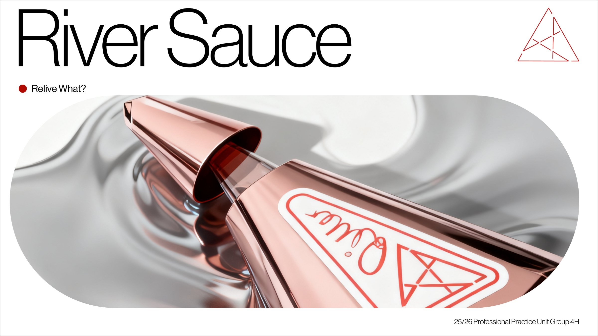
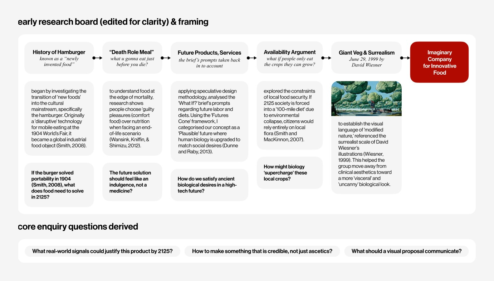
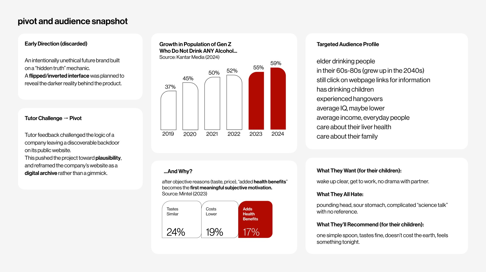
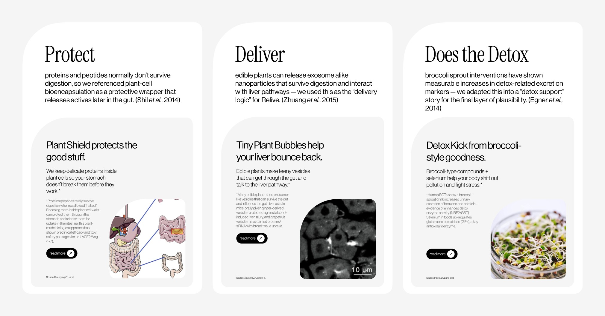
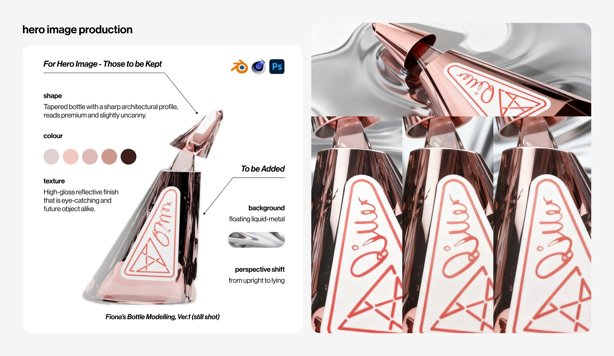
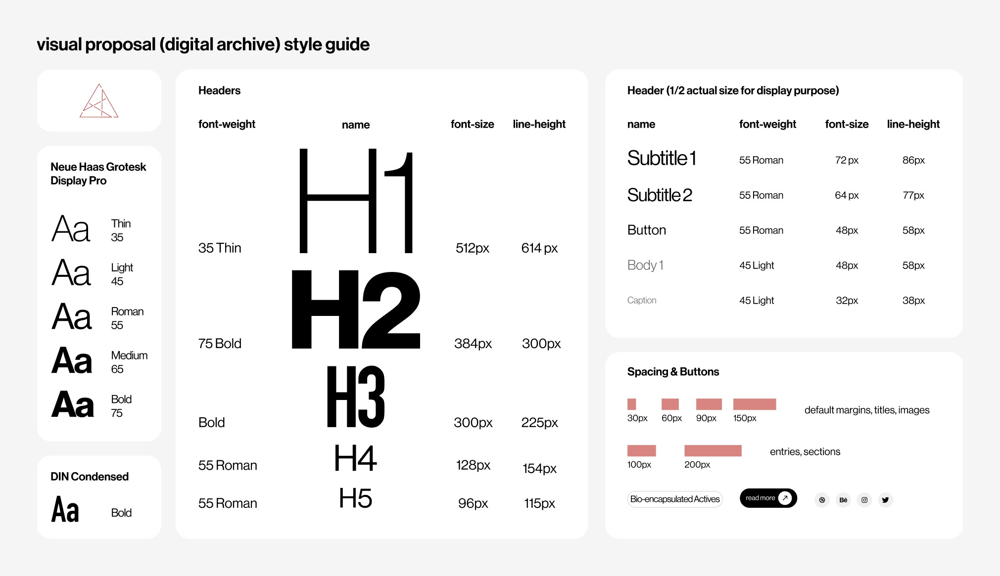
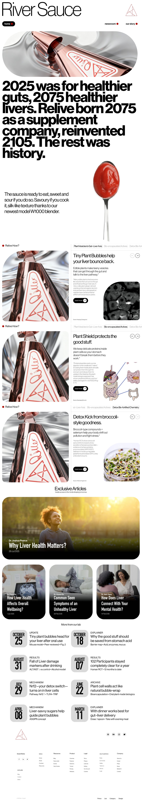

River Sauce, a navigable digital archive plus a final pitch deck

River Sauce, the hero visual that opens the project.
A “What If?” brief asked us to design for the year 2125. We answered with River Sauce, a supplement brand that claims to rebuild your liver, presented as if it had been part of everyday life for a century.
The work is deliberately plausible rather than flashy. We borrowed just enough real research to make a fictional product believable, then staged it through the brand’s own website, a digital archive a visitor in 2125 might actually browse. Working as a team of five, my focus was the final realisation: compositing the hero image, building the website archive, and refining the pitch deck so the whole story held together.
2025 was for healthier guts, 2075 healthier livers.
Collaboration, listed in no particular order
Fiona DuIllustration · 3D bottle modelling
Tinu OgunmefunGraphic · campaign poster
Yi (Alyssa) QuUX · research inputs
Joshua Landell-JacksonArt direction · concept framing
My contribution, Jack (UX)
Research synthesis and reference curation early on, then audience and rationale in the middle, then the archive structure and deck system at the end. That work came together in the hero compositing, the website archive build, and the final deck refinement.
We started from real signals: the history of the hamburger as a “new food”, what people reach for at the very edge of life, and a hundred mile diet forced by environmental collapse. Run through the Futures Cone, these settled our concept as a plausible 2125 where human biology is upgraded to meet old desires.

The edited research board: five reference threads converging on an imaginary food company.
02
Pivot toward plausibility
An early direction built the brand on a “hidden truth”, a flipped interface that exposed a darker reality. Tutor feedback challenged the logic, so we reframed the website as a genuine digital archive rather than a gimmick. The audience sharpened too: older drinkers who still click webpage links, care about their liver, and want one simple spoonful that works.

The pivot, and the audience it pointed us toward.
03
Borrow real science
To make the fiction believable without making a literal medical claim, we borrowed three real mechanisms and retold them in brand language: plant cell bioencapsulation became Protect, nanoparticles from edible plants became Deliver, and detox markers from broccoli sprouts became Detox. Each one turned into a “science behind” page in the archive.

Three cited mechanisms, retold as Protect · Deliver · Detox.
04
Build the hero image
Starting from Fiona’s bottle model, I directed and composited the hero. I kept the tapered, slightly uncanny profile and the high gloss finish, then added a floating liquid metal background and shifted the bottle from upright to lying down. It was modelled in Blender and Cinema 4D and finished in Photoshop, the single image that sets the brand’s tone across the site and the deck.

Hero compositing: what to keep from the model, what to add, and the final renders.
05
Resolve as an archive
First we set a shared visual system: a type scale, spacing rules, and reusable components, so every page felt like one archive rather than a set of loose screens. Worldbuilding, product, and “science behind” pages then folded into a single experience a 2125 visitor could navigate, and I built the matching pitch deck from the same system so the story read consistently from landing page to final slide.

The shared system: type scale, spacing, and components that hold the archive together.

The realised website, end to end — the archive a 2125 visitor would actually browse. The pitch deck was built from this same system and presented 4 Nov 2025.
A believable future is mostly editing: keeping the few real things that make a fiction hold.